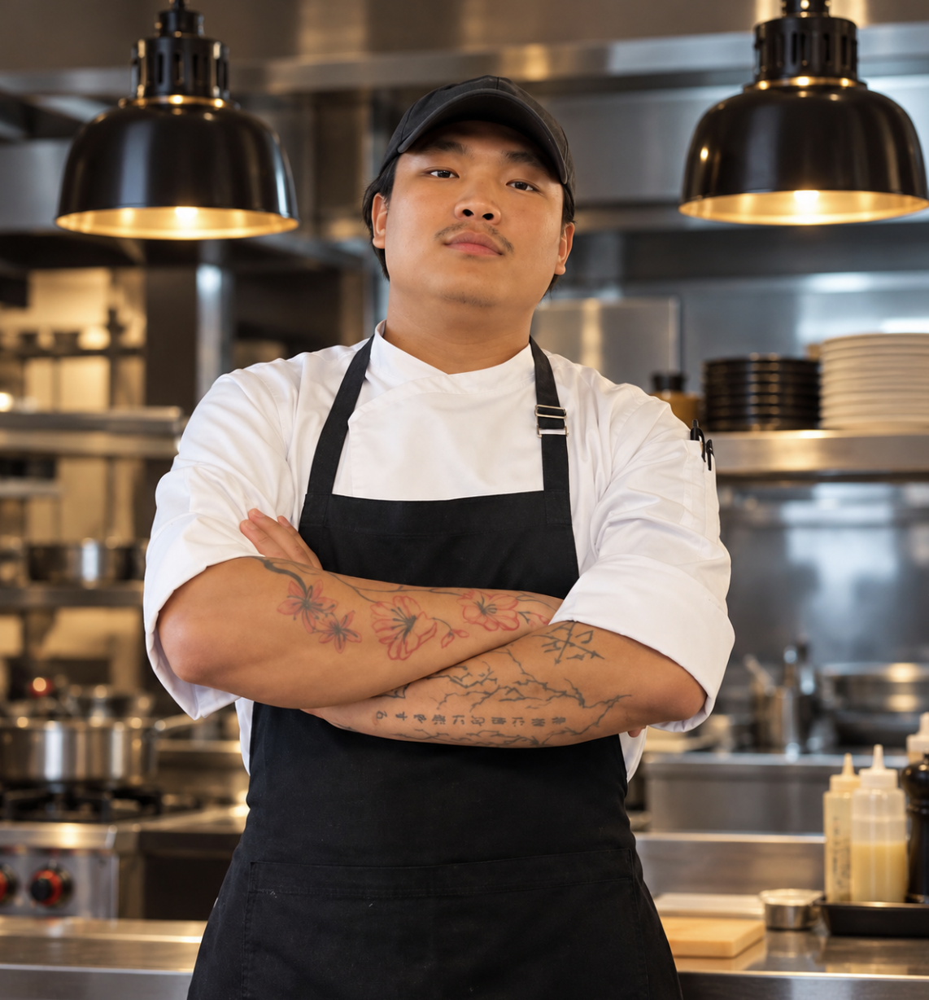

Open to the right kitchen and the right team.
Chef de Partie
I cook with intention.
I’m Roman Rai. I care about honest ingredients, thoughtful technique, and the people behind every service.

Good food starts
with respect.
I believe good cooking starts with respect: for the ingredient, the people making the meal, and the person sitting down to enjoy it. My approach is curious, hands-on, and grounded in the rhythm of a professional kitchen.
Japanese precision, Peruvian brightness, and European technique are influences in my cooking, not a substitute for the places and people who have shaped my career.
Kitchens that shaped me.
My experience is best told through the teams, standards, and services I’ve been part of.
Experience details will appear here.
A few things I’ve made.
Plates are a conversation between ingredient, technique, and the moment they’re served.
My selected dishes will appear here.
Ready for
the rhythm of service.
Let’s make
something good.
I’m open to a thoughtful conversation about the right kitchen, team, or opportunity.
Get in touch Call